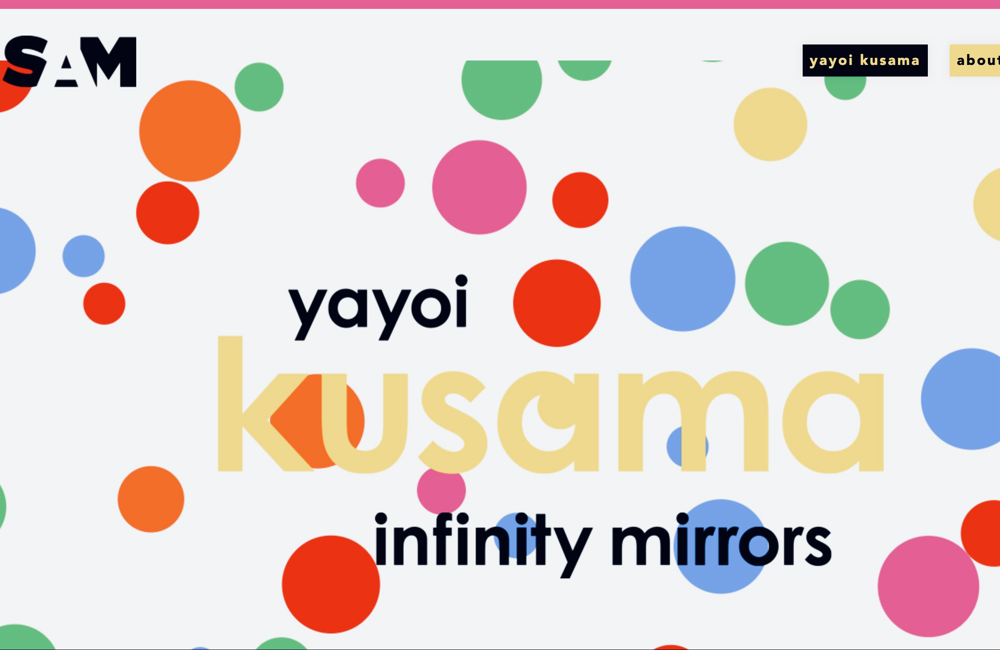
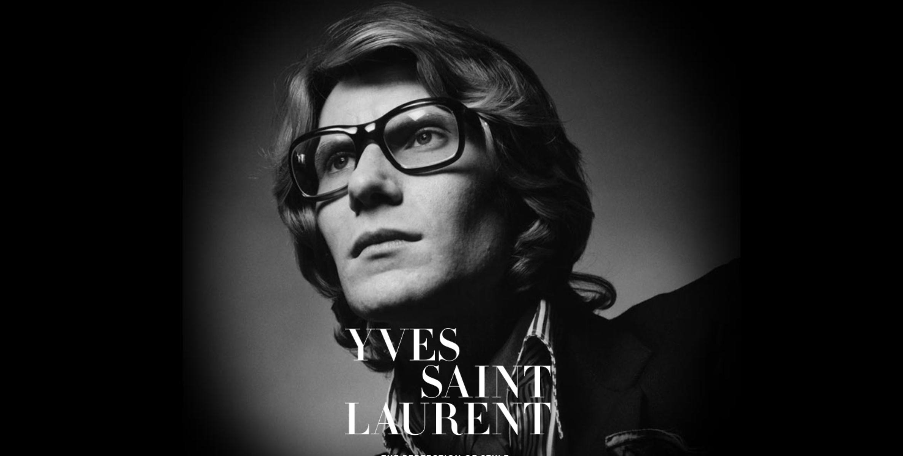
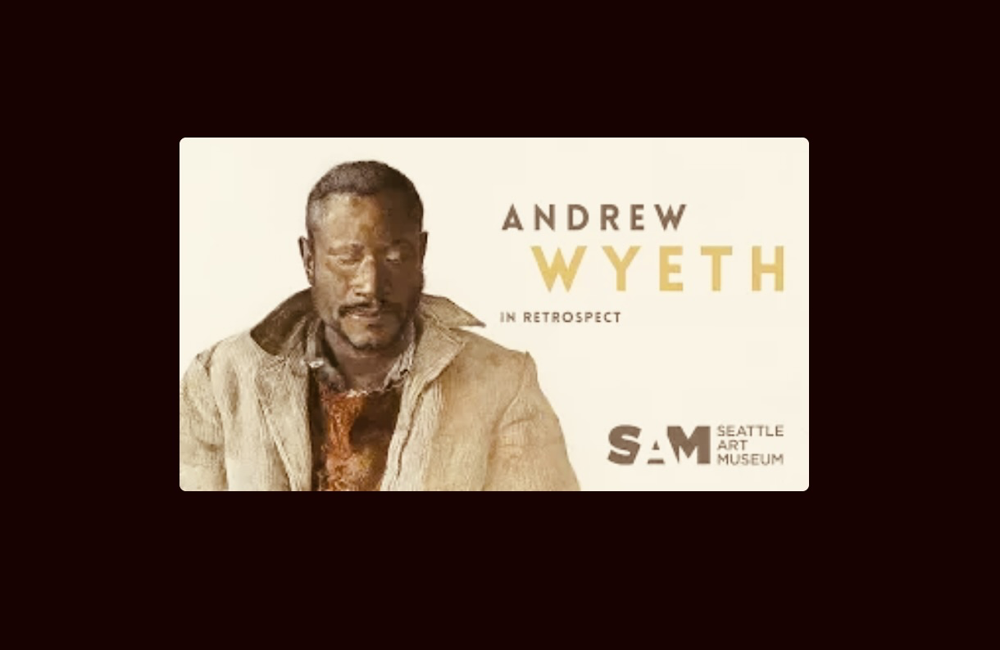
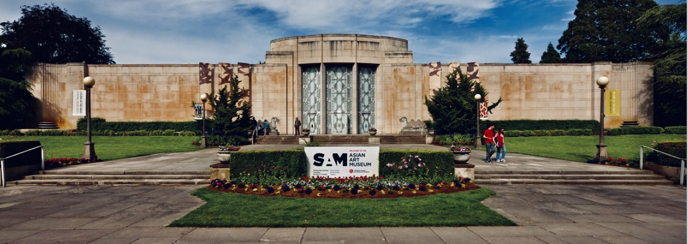
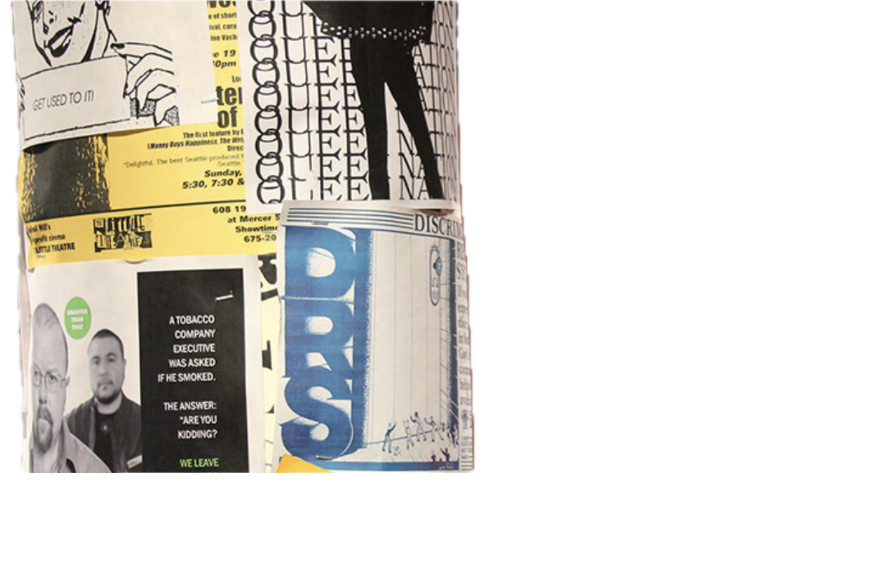

Digital
Video production, web design & digital content
outtaluv
A queer love story built entirely from stock footage. I did all of it — composed and produced the track from scratch, directed the visual narrative, then spent hours in DaVinci Resolve painstakingly syncing every keyframe and transition to the flow of the music. The real challenge was the source material: finding clips across the internet that weren't grossly stereotypical in their representation or so obscure they couldn't carry a story. What came out the other end is a cohesive narrative made from strangers' images that somehow feels personal.
Ya/Know
Same process — wrote and produced the track, sourced the footage, aligned every beat. This one just turned out cool.
Finish What You Started
Same blueprint — built the track, found the footage, synced every cut. Because it's important as a creative to finish what you started.
They Get What They Deserve
An experiment. A just-for-fun visual treatment of a moment pulled from my memoir in the works — narration, backing track, and editing all mine. For a one-off creative side quest, I think I rendered something quite compelling.
During my years at the Seattle Art Museum and MOHAI, I helped build microsites for world-class exhibitions and retrospectives — Kusama, Yves Saint Laurent, Andrew Wyeth, and more. My role lived at the intersection of creative direction and execution: shaping the narrative, writing the content and image descriptions, getting into the HTML and CSS when the work called for it. These weren't vanity pages — they drove significant revenue in ticket and membership sales.




